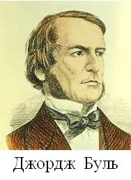
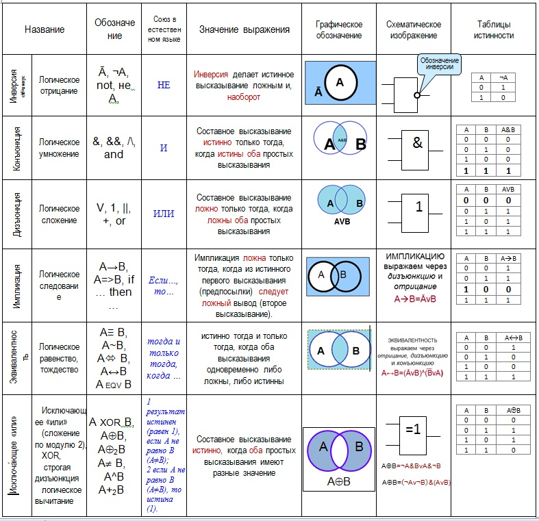
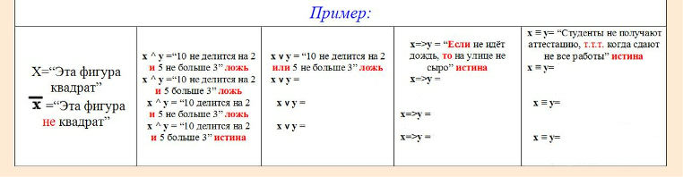

Основные понятия Алгебры логики. Логические операции
Цели
- Изучить тему: Основные понятия Алгебры логики»
- Изучить логические основы обработки информаццц; Логические основы обработки информации»
- Применить на практике основные логические операции
Инструменты:
- ОС Windows
- Браузер
-
logika.exe
Задание 1. Запишите в конспект тему занятия. Предложенные определения оформите в виде кластера (схемы) используя навыки конспектирования (Например, введя обозначения для слов). Напишите примеры, по мере изучения материала.
Кластер оформляется в виде грозди или модели планеты со спутниками. В центре располагается основное понятие, мысль, по сторонам обозначаются крупные смысловые единицы, соединенные с центральным понятием прямыми линиями.
Это могут быть слова, словосочетания, предложения, выражающие идеи, мысли, факты, образы, ассоциации, касающиеся данной темы.
И вокруг «спутников» центральной планеты могут находиться менее значительные смысловые единицы, более полно раскрывающие тему и расширяющие логические связи.
Алгебра логики возникла в середине ХIХ века в трудах английского математика Джорджа Буля. Ее создание представляло собой попытку решать традиционные логические задачи алгебраическими методами.

Задание 2. Оформите в конспект примеры, дописывая их в схему задания 1.
Предложение "7 — нечетное число" следует считать высказыванием, так как оно истинное.
Предложение "Мадрид — столица Бразилии" тоже высказывание, так как оно ложное.
Не все предложения являются логическими высказываниями. Высказываниями не являются, предложения "ученик десятого класса" и "информатика — интересный предмет". Первое предложение ничего не утверждает об ученике, а второе использует слишком неопределённое понятие "интересный предмет". Вопросительные и восклицательные предложения также не являются высказываниями, поскольку говорить об их истинности или ложности не имеет смысла.
Алгебра логики рассматривает любое высказывание только с одной точки зрения — является ли оно истинным или ложным .
Высказывание "площадь поверхности Индийского океана равна 75 млн кв. км" в одной ситуации можно посчитать ложным, а в другой — истинным. Ложным — так как указанное значение неточное и вообще не является постоянным. Истинным — если рассматривать его как некоторое приближение, приемлемое на практике.
Задание 3. Оформите в конспект логические высказывания из следующих предложений. Задание по вариантам. Поясните своё решение.
| № варианта | Вариант 1 | Вариант 2 | Вариант 3 | Вариант 4 |
| Номер по журналу | 2, 6, 10, 14, 18, 22, 26, 30, 34. | 3, 7, 11, 15, 19, 23, 27, 31, 35. | 4, 8, 12, 16, 20, 24, 28, 32, 36 | 1, 5, 9, 13, 17, 21, 25, 29, 33 |
| Задание |
1 Солнце есть спутник Земли; 2 2+3?4; 3 Сегодня отличная погода; 4 В романе Л.Н. Толстого Война и мир 3 432 536 слов; 5 Санкт-Петербург расположен на Неве ; 6 Музыка Баха слишком сложна; 7 Первая космическая скорость равна 7.8 км/сек ; 8 Железо — металл; 9 Если один угол в треугольнике прямой, то треугольник будет тупоугольным; 10 Если сумма квадратов двух сторон треугольника равна квадрату третьей, то он прямоугольный. |
1 Некоторые кошки - серые. 2 Кто умеет плавать? 3 Киев - столица Украины. 4 Невозможно создать вечный двигатель. 5 Внимание! Проезд закрыт! 6 Стой! Кто идет? 7 Человек все может. 8 Есть ли жизнь на Марсе? 9 Некоторые рыбы - хищники. 10 Ни один внимательный человек не совершит оплошность. |
1 Наполеон был французским императором. 2 Чему равно расстояние от Земли до Марса? 3 Внимание! Посмотрите направо. 4 Электрон - элементарная частица. 5 Не нарушайте правил дорожного движения! 6 Не все книги содержат полезную информацию. 7 Кошка является домашним животным. 8 Выразите 1 час 15 минут в минутах. 9 Ура! Каникулы! 10 Всякий моряк умеет плавать. |
1 Любой неразумный человек ходит на руках. 2 Все лекарства неприятны на вкус. 3 Будьте внимательны и осторожны! 4 Мой кот страшный забияка. 5 Кто там? 6 Всякий квадрат есть параллелограмм. 7 Каждый параллелограмм есть квадрат 8 Назовем медианой отрезок, соединяющий вершину треугольника с серединой противоположной стороны 9 Он сероглаз 10 Кто ходит в гости по утрам, тот поступает мудро. |
Задание 4. Прочитайте материал. Выполните задане по вариантам.
НЕ Операция, выражаемая словом "не", называется отрицанием и обозначается чертой над высказыванием (или знаком
Строятся отрицания добавлением слов «Неверно, что» перед исходным высказыванием. Перевсти на более понятный можно так:
"Луна - не спутник Земли", или "Не Луна - спутник Земли" или "Луна - спутник не Земли"
Запишите в конспект, отрицания следующих высказываний или высказывательных форм:
| № варианта | Вариант 1 | Вариант 2 | Вариант 3 |
| Номер по журналу | делиться на 3 и в остатке 1 | делиться на 3 и в остатке 2 | делиться на 3 и в остатке 0 |
| Задание |
1) 2>=5; 2) 3 + 4 < 5; 3) Треугольник АВС — прямоугольный; 4) все натуральные числа целые; 5) через любые три точки на плоскости можно провести окружность; 6) На улице сухо; 7) Ваня не был готов сегодня к урокам; 8) Некоторые млекопитающие не живут на суше. |
1) 10<7; 2) 4 + 5< 6; 3) При делении числа 42 на 5 в остатке получится 7; 4) этот треугольник равнобедренный и прямоугольный; 5) Неверно, что число 3 не является делителем числа 198; 6) теннисист Кафельников не проиграл финальную игру; 7) мишень поражена первым выстрелом; 8) это утро ясное и теплое. |
1) 15<8; 2) Число 133 делится на 9; 3) число n делится на 2 или на 3; 4) Неверно, что число 17 – простое; 5) Диагонали любого ромба не равны между собой; 6) Сегодня выходной день; 7) Эльбрус — высочайшая горная вершина Европы; 8) На контрольной работе каждый ученик писал своей ручкой. |
Задание 5. После изучения материала, запишите в конспект, какие из высказываний (высказывательных форм) в следующих парах являются отрицаниями друг друга, а какие нет:
Задание для всех.
- 5<10, 5>10;
- 10>9, 10<=9;
- мишень поражена первым выстрелом, мишень поражена вторым выстрелом;
- машина останавливалась у каждого из двух светофоров, машина не останавливалась у каждого из двух светофоров,
- человечеству известны все планеты Солнечной системы, "в Солнечной системе есть планеты, неизвестные человечеству;
- существуют белые слоны, все слоны серые ;
- кит — млекопитающее , кит — рыба ;
- неверно, что точка А не лежит на прямой а, точка А лежит на прямой а;
- прямая а параллельна прямой b, прямая a перпендикулярна прямой b;
- этот треугольник равнобедренный и прямоугольный, этот треугольник не равнобедренный или он не прямоугольный.
Задание 6.
Оформите таблицу
“Логические операции” в тетради (на весь
разворот на две страницы).

Задание 7. Запишите информацию в конспект, используя навыки конспектирования (например, сокращая слова).
Употребляемые в обычной речи слова и словосочетания "не", "и", "или", "если... , то", "тогда и только тогда" и другие позволяют из уже заданных высказываний строить новые высказывания. Такие слова и словосочетания называются логическими связками.
Чтобы обращаться к логическим высказываниям, им назначают имена.
Bысказывания, образованные из других высказываний с помощью логических связок, называются составными. Высказывания, не являющиеся составными, называются элементарными.
 Пример 1 использования связок при составлении высказываний на языке (в виде формулы) алгебры логики
Пусть через А обозначено высказывание "Тимур поедет летом на море", а через В —
высказывание "Тимур летом отправится в горы". Тогда составное высказывание "Тимур летом побывает и на море, и в горах" можно кратко записать как А и В.
Пример 1 использования связок при составлении высказываний на языке (в виде формулы) алгебры логики
Пусть через А обозначено высказывание "Тимур поедет летом на море", а через В —
высказывание "Тимур летом отправится в горы". Тогда составное высказывание "Тимур летом побывает и на море, и в горах" можно кратко записать как А и В.
Пример 2 использования связок при составлении высказываний на языке (в виде формулы) алгебры логики
Из элементарных высказываний "Петров — врач" обозначено высказывание А, "Петров — шахматист" обозначено высказывание B при помощи связки "и" можно получить составное высказывание "Петров — врач и шахматист", записываемое А и В, понимаемое как "Петров — врач, играющий в шахматы".
При помощи связки "или" из этих же высказываний можно получить составное высказывание "Петров — врач или шахматист", записываемое А и В, понимаемое в алгебре логики как "Петров или врач, или шахматист, или и врач и шахматист одновременно".
В этих примерах "и" — логическая связка, "или"& — логическая связка, А, В — логические переменные, которые мoгут принимать только два значения — "истина" или "ложь", обозначаемые, соответственно, "1" и "0". Истинность или ложность получаемых таким образом составных высказываний зависит от истинности или ложности элементарных высказываний.
Задание 8. Запишите информацию в конспект, используя навыки конспектирования (например, сокращая слова).
При конспектировании, учтите, что часть информации вы уже написали!
ЕСЛИ-ТО Операция, выражаемая связками
"если ..., то", "из ... следует", "... влечет ...", называется
импликацией (лат. implico —
тесно связаны) и обозначается знаком  .
Высказывание
.
Высказывание  ложно тогда и только
тогда, когда А истинно, а В ложно.
ложно тогда и только
тогда, когда А истинно, а В ложно.
В обычной речи связка "если ..., то" описывает причинно-следственную связь между высказываниями. Но в логических операциях смысл высказываний не учитывается. Рассматривается только их истинность или ложность. Поэтому не надо смущаться "бессмысленностью" импликаций, образованных высказываниями, совершенно не связанными по содержанию. Например, такими: "если президент США — демократ, то в Африке водятся жирафы", "если арбуз — ягода, то в бензоколонке есть бензин".
РАВНОСИЛЬНО Операция, выражаемая связками
"тогда и только тогда", "необходимо и достаточно",
"... равносильно ...", называется эквиваленцией
или двойной импликацией и обозначается знаком  или ~. Высказывание
или ~. Высказывание  истинно тогда и только тогда, когда значения А и В совпадают.
истинно тогда и только тогда, когда значения А и В совпадают.
Высказывания А и В, образующие составное высказывание ,
могут быть совершенно не связаны по содержанию, например:
"три больше двух" (А), "пингвины живут в Антарктиде" (В).
Отрицаниями этих высказываний являются высказывания "неверно, что три больше двух"
( ), "неверно, что пингвины живут в Антарктиде"
(
), "неверно, что пингвины живут в Антарктиде"
( ).
Образованные из высказываний А и В составные высказывания
A
).
Образованные из высказываний А и В составные высказывания
A B и
B и


 истинны, а высказывания A
истинны, а высказывания A
 и
и 
 B — ложны.
B — ложны.
Задание 9. Запишите в конспект высказывание используя логические переменные, по аналогии с п.7 и п.8 Определив значения истинности:
Задание для всех.
Задание 10. Запишите порядок действий в сложных логических выражениях в конспект.

Задание 11. Запишите информацию в конспект, используя навыки конспектирования (например, сокращая слова).
С помощью логических переменных и символов логических операций любое высказывание можно формализовать,то есть заменить логической формулой. (Записать на языке алгебры логики или записать в виде формулы)
Определение логической формулы:
|
Табли́ца и́стинности — это таблица, задающая логическую функцию.
ТИ - это таблица, с помощью которой устанавливается истинностное значение сложного высказывания при данных значениях входящих в него простых высказываний. В классической математической логике предполагается, что каждое простое (не содержащее логических связок) высказывание является либо истинным, либо ложным, но не тем и другим одновременно. Нам не известно, истинно или ложно данное простое высказывание, чтобы установить это, потребовалось бы обратиться к фактам действительности, но логика этого не делает. Однако мы знаем, что у высказывания имеется лишь две возможности - быть истинным либо быть ложным. Когда с помощью логических связок мы соединяем простые высказывания в сложное, встает вопрос: при каких условиях сложное высказывание считается истинным, а при каких - ложным? Для ответа на этот вопрос и служат таблицы.
В качестве примера рассмотрим высказывание "если я куплю яблоки или
абрикосы, то приготовлю фруктовый пирог". Это высказывание формализуется в виде (A v B)  C.
Такая же формула соответствует высказыванию "если Игорь знает
английский или японский язык, то он получит место переводчика".
C.
Такая же формула соответствует высказыванию "если Игорь знает
английский или японский язык, то он получит место переводчика".
Как показывает анализ формулы (A v B)  C, при
определённых сочетаниях значений переменных A, B и C она принимает значение "истина", а при некоторых других сочетаниях — значение "ложь" (разберите самостоятельно эти случаи). Такие формулы называются выполнимыми.
C, при
определённых сочетаниях значений переменных A, B и C она принимает значение "истина", а при некоторых других сочетаниях — значение "ложь" (разберите самостоятельно эти случаи). Такие формулы называются выполнимыми.
Некоторые формулы принимают значение "истина" при любых значениях
истинности входящих в них переменных. Таковой будет, например,
формула А v  ,
соответствующая высказыванию "Этот треугольник прямоугольный или
косоугольный". Эта формула истинна и тогда, когда треугольник
прямоугольный, и тогда, когда треугольник не прямоугольный. Такие
формулы называются тождественно истинными формулами или
тавтологиями. Высказывания, которые формализуются
тавтологиями, называются логически истинными высказываниями.
,
соответствующая высказыванию "Этот треугольник прямоугольный или
косоугольный". Эта формула истинна и тогда, когда треугольник
прямоугольный, и тогда, когда треугольник не прямоугольный. Такие
формулы называются тождественно истинными формулами или
тавтологиями. Высказывания, которые формализуются
тавтологиями, называются логически истинными высказываниями.
В качестве другого примера рассмотрим формулу А .  , которой соответствует, например,
высказывание "Катя самая высокая девочка в классе, и в классе есть
девочки выше Кати". Очевидно, что эта формула ложна, так как либо
А, либо
, которой соответствует, например,
высказывание "Катя самая высокая девочка в классе, и в классе есть
девочки выше Кати". Очевидно, что эта формула ложна, так как либо
А, либо  обязательно
ложно. Такие формулы называются тождественно ложными формулами
или противоречиями. Высказывания, которые формализуются
противоречиями, называются логически ложными высказываниями.
обязательно
ложно. Такие формулы называются тождественно ложными формулами
или противоречиями. Высказывания, которые формализуются
противоречиями, называются логически ложными высказываниями.
Если две формулы А и В одновременно, то есть при одинаковых наборах значений входящих в них переменных, принимают одинаковые значения, то они называются равносильными.
Равносильность двух формул алгебры логики обозначается символом "="
или символом " " Замена формулы другой, ей равносильной, называется равносильным преобразованием данной формулы.
" Замена формулы другой, ей равносильной, называется равносильным преобразованием данной формулы.
Задание 12. Подставьте в приведённые ниже высказывательные формы вместо логических переменных a, b, c, d такие высказывания, чтобы полученные таким образом составные высказывания имели смысл в повседневной жизни. Запишите высказывания в конспект:
Задание выполняется обратно указанному в п 7 и 8, 11
- Вариант если (а или (b и с)), то d;
- Вариант если (не а и не b), то d;
- Вариант (а или b) тогда и только тогда, когда (с и не d).
Задание 13. Формализуйте следующий вывод: "Если a и b истинны, то c — истинно. Но c — ложно: значит, a или b ложны". Запишите вывод в конспект. При выполнении задания смотри пункт 11
Задание 14. Вычислите значения выражений в программе logika.exe
Для запуска
программы: откройте в проводнике
 папку 1_semestr\1_semestr\tema_6\logika.exe
папку 1_semestr\1_semestr\tema_6\logika.exe
Результат работы в программе logika.покажите преподавателю.
Задание 15. Запишите в конспект oтвет на вопрос: Какая связь между алгеброй логики и двоичным кодированием?
Математический аппарат алгебры логики очень удобен для описания того, как функционируют аппаратные средства компьютера, поскольку основной системой счисления в компьютере является двоичная, в которой используются цифры 1 и 0, а значений логических переменных тоже два: "1" и "0".
Из этого следует два вывода:
- одни и те же устройства компьютера могут применяться для обработки и хранения как числовой информации, представленной в двоичной системе счисления, так и логических переменных;
- на этапе конструирования аппаратных средств алгебра логики позволяет значительно упростить логические функции, описывающие функционирование схем компьютера, и, следовательно, уменьшить число элементарных логических элементов, из десятков тысяч которых состоят основные узлы компьютера.
Задание 16. Выразите следующие формулы на обычном языке. Запишите получившееся предложения в конспект

Задание 17. Из двух данных высказываний a и b постройте составное высказывание, которое было бы:
- истинно тогда и только тогда, когда оба данных выказывания ложны;
- ложно тогда и только тогда, когда оба данных высказывания истинны.
Запишите получившееся предложения в конспект
!!!!!!!!!!!!! Задания на дополнительную оценку
Задание 18. Из трех данных высказываний a, b, c постройте составное высказывание, которое истинно, когда истинно какое-либо одно из данных высказываний, и только в этом случае. Запишите получившееся предложение в конспект
Задание 19. Заполните примеры в конспект самостоятельно. Запишите ответы в конспект

"Если ты будешь говорить правду, то тебя возненавидят люди. Если ты будешь лгать, то тебя возненавидят боги. Но ты должен говорить правду или лгать. Значит, тебя возненавидят люди или возненавидят боги".
Формализуйте также ответ сына: "Если я буду говорить правду, то боги
будут любить меня. Если я буду лгать, то люди будут любить меня. Но я должен
говорить правду или лгать. Значит, меня будут любить боги или меня будут
любить люди".